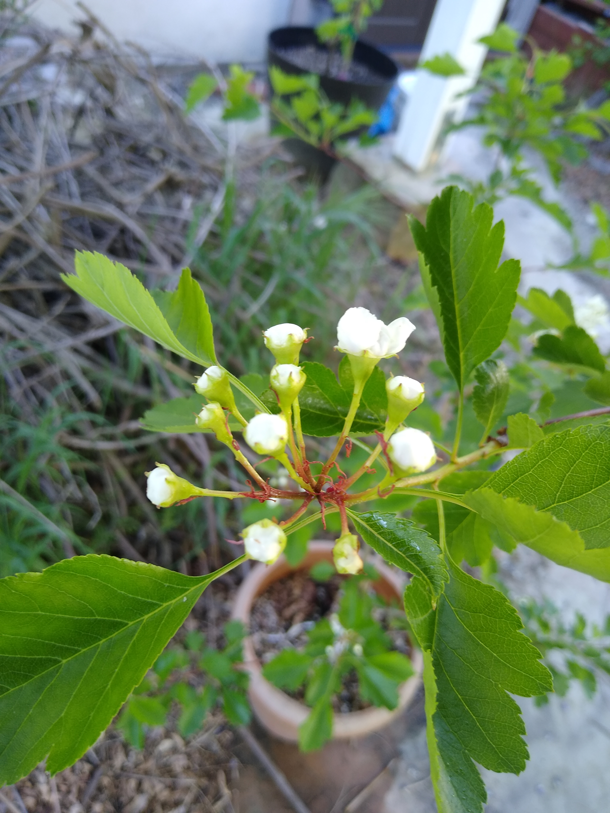
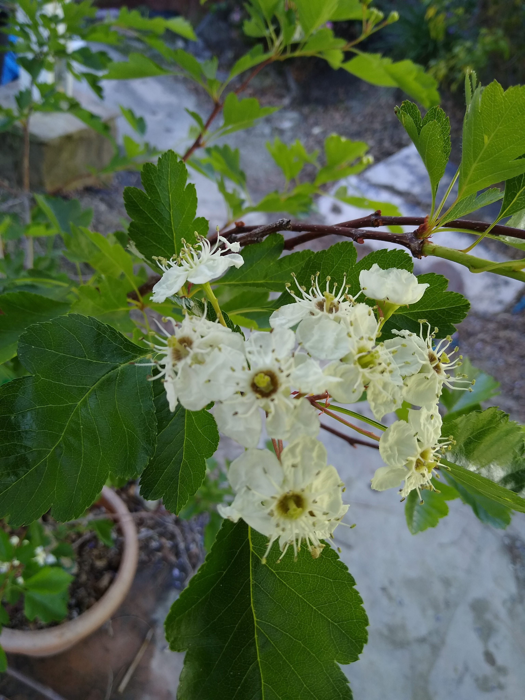
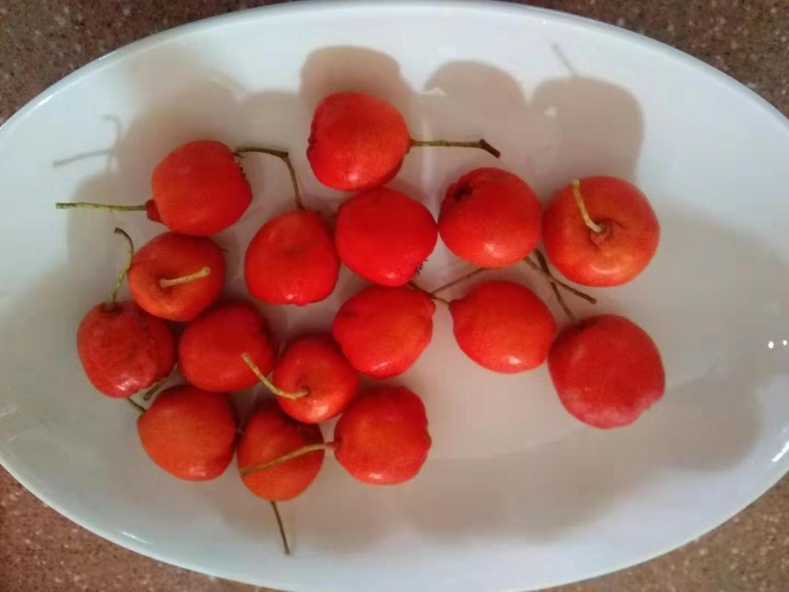
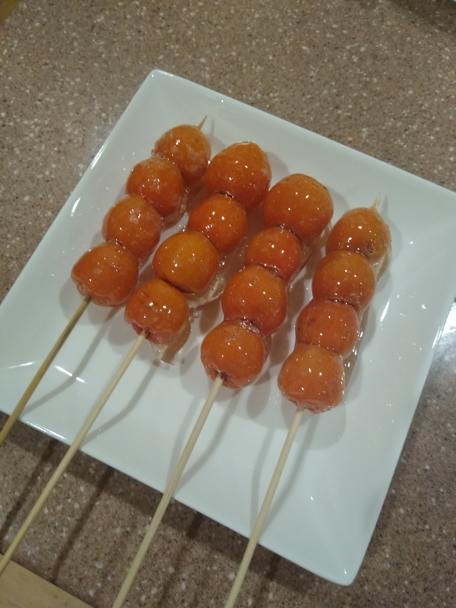

Gardening
Hawthorns
March: Flower buds.

April: Flowers bloom. They smell slightly bad.

July: Most of the flowers fell off. The few that remain grow larger.
October: Picked berries.

January: 糖葫芦 big pog
